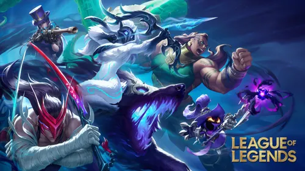

① 리그 오브 레전드 (League of Legends)
담당자: 신영규 — 현재 티어: 실버 (광물 탈출 희망자)
🎮 소주제: 빡쳐도 나도 모르게 찾는 게임
롤은 "하기 싫다" 말하면서도 결국 다시 켜는 기묘한 게임입니다.
지면 멘탈이 터지고 “삭제함” 외치지만… 10분 뒤엔 또 로그인합니다.
승리하면 기분이 좋아지고, 패배하면 “팀 탓”하며 또 한 판 돌립니다.
💬 신영규 TMI:
실버에서 벗어나고 싶어서 매년 골드를 다짐하지만…
올해도 “다음 시즌엔 진짜 간다”라고 말하는 중.
🌍 세계관
룬테라라는 거대한 세계에서 여러 지역과 세력이 맞서 싸웁니다.
데마시아, 녹서스, 아이오니아 등 지역마다 복잡한 역사와 이야기가 존재합니다.
🎚 난이도 게이지
70%